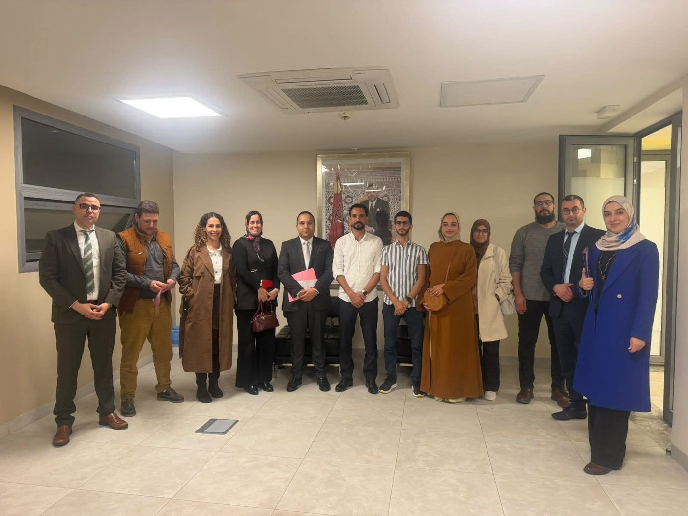

مكتب التنسيق الوطني للوكالة المغربية للدم ومشتقاته يعقد اجتماعاً مطوّلاً مع إدارة الوكالة بحضور الكاتب الوطني

عقد مكتب التنسيق الوطني للوكالة المغربية للدم ومشتقاته، التابع للنقابة المستقلة للممرضين وتقنيي الصحة، اجتماعاً مطوّلاً مع إدارة الوكالة المغربية للدم ومشتقاته، وذلك بحضور السيد الكاتب الوطني وتمثيلية عن المكتب الوطني.
واتسم الاجتماع بروح الجدية والمسؤولية والاستعداد المتبادل للمضي قدماً بهذه المؤسسة الاستراتيجية.
يستمر الترافع والدفاع عن الهوية التمريضية.
باقي التفاصيل لاحقاً.
فتح في تطبيق النقابة